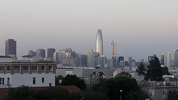

 Perhaps the most contentious topic among locals: the Salesforce Tower. It's now risen above the skyline, and as far as I can tell, visable from anywhere I am in the Bay Area. Everytime I look up, there it is.
Fireworks in SF are a rare sighting - usually they're just colored fog - people stand around and ooh and aah at the pretty colors. This year, for New Year's Eve down along the Embarcadero, the view was quite clear and the now permanent light installation on the Bay Bridge made for a nice setting.